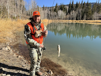

Nick Waechtler | WDD 130

Hello my name is Nick Waechtler and I am from Utah, USA. I served a mission from 2008-2010 in the Californian Roseville mission. I enjoy the outdoors, playing basketball, building legos, playing magic the gathering, and spending time with family. My wife and I got married in August of 2024 and are expecting our first child in June. I currently work for a Credit Union as a Consumer Loan Underwriter and have been there for just over 10 years. I am currently studying Software Development at BYU-Pathway. I am excited to learn new things and continue to work towards my degree.